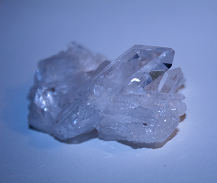

Crystal Cleansing
Why Should You Cleanse Your Crystals?
Crystals are from the earth. Often once they come out the ground they are tumbled or raw from the source and put up for sale. The crystals may take a course that exposes them to energies that are unwanted to you prior to them entering the shop. Crystals absorb and transform energy to purify it. So they can transfer the bad energy over which is why when you want to use them to heal, they should be cleansed first. When a crystal is cleansed it is restored to its purest powerful energy state.
| How do you Cleanse a Crystal? | |
|---|---|
| Source | Description |
| Running Water | We drink water to neutralize our bodies. The same goes for crystals. It is best to use natural sources of water but you can use your sink at home as well. This is usually done when cleansing the harder stones. |
| Salt Water | Think about how people choose to go the beach to reset and feel peace. Thats basically what its like when you use salt water for a crystal. Salt water is known to purify and absorb unwated energy therefore its a great substance to cleanse your crystals. |
| Sun/Moon | The sun and moon are natural energy points to the earth. Crystals are similar energy points. Using sources that the earth provides is one of the best ways to ground and purify your stones. |
| Sage | Burning Sage is a great way to rid the bad energy that a stone may carry. Sage is known to hold many different healing properties. When cleansing your stones with Sage, if not outdoors, make sure to open a window to let the bad energy leave the area. |
| Other Crystals | Placing stones on your larger stones can level the vibrations in your stones. Some Crystals also boost other crystals and can be used to cleanse, an example is clear quartz. |
Crystal Charging
Why Should You Charge Your Crystals?
While cleansing the crystal is getting rid of all the energy the crystal picked up through transit, charging is restoring the natural energy. This gives your crystal additional energy and intention to heal.
How to charge your crystals?
Similar to cleansing a crystal, you can charge a crystal using the sun and moons light energy. The full moon is a power point in the lunar cycle therefore if you place your crystals below it, the crystals will be charged by the lunar energy. Likewise if you charge water with the moon then place your crystals in that, it'll serve the same purpose.
Some crystals serve as "booster" crystals because they charge other crystals. An example of this is the clear quartz stone.
burying crystals in the dirt - When you place the crystal back into the earth, its almost as though the crystal is being reborn. This cleanses and recharges the stone to replace the original pure state.